第 3 講：自指邏輯主題 3 —— 從塔斯基不可定義定理到自指與語意
本講聚焦於自指邏輯中的語意層面，尤其是塔斯基（Tarski）的兩個核心成果：
- 塔斯基真理不可定義定理（Tarski's Undefinability of Truth）
- 塔斯基不可判定定理的語意版本（與演算樹、語意後果相關的不可判定性）
我們將在本講中：
- 給出形式語言與語意（結構、解釋）的嚴格定義。
- 嚴謹陳述並證明（或幾乎完整證明）塔斯基真理不可定義定理。
- 說明該定理與哥德爾不完備性定理的內在關聯，並從「自指」角度剖析。
- 引介塔斯基語意後果的觀點，並說明若試圖判定一階邏輯語意有效性會遇到何種不可判定性。
- 給出一些現代延伸與研究方向的簡介。
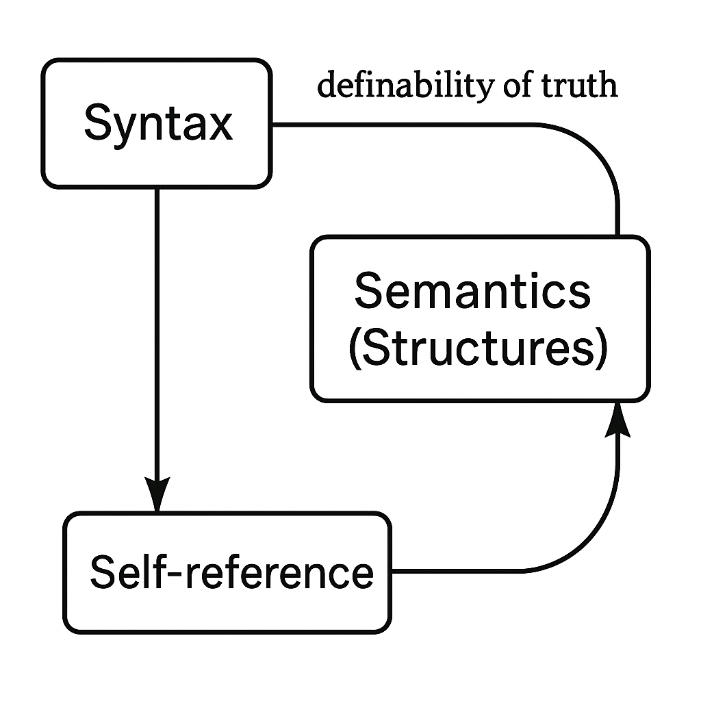
圖 3-9: a conceptual diagram with three boxes labeled "Syntax", "Semantics (Structures)", and "Self-reference", with arrows showing interactions; especially an arrow from Syntax to Semantics labeled "definability of truth" and a loop showing self-reference at the semantic level
Prompt: a conceptual diagram with three boxes labeled "Syntax", "Semantics (Structures)", and "Self-reference", with arrows showing interactions; especially an arrow from Syntax to Semantics labeled "definability of truth" and a loop showing self-reference at the semantic level
3.1 語法與語意：從公式到結構
3.1.1 一階語言與公式
我們先回顧一階語言的基本定義，因為塔斯基真理不可定義定理是關於「一個足夠強的一階理論之中，無法內部定義其自身的真理謂詞」的結果。
定義 3.1（語言） 一個一階語言 \( \mathcal{L} \) 包含：
- 一個函數符號集 \( \mathcal{F} \)，每個函數符號 \( f \in \mathcal{F} \) 有給定的元數 \( \mathrm{arity}(f) \in \mathbb{N} \)。
- 一個謂詞符號集 \( \mathcal{P} \)，每個謂詞符號 \( P \in \mathcal{P} \) 也有元數 \( \mathrm{arity}(P) \in \mathbb{N} \)。
- 可能包含常元符號（0 元函數符號）作為特例。
- 可數多的變數符號集合 \( \{ x_0, x_1, x_2, \dots \} \)。
- 邏輯符號：\( \land, \lor, \lnot, \rightarrow, \leftrightarrow, \forall, \exists, = \) 等。
項（term）與公式（formula）則由歸納定義：
- 每個變數與常元是項；若 \(t_1,\dots,t_n\) 是項且 \(f\) 是 \(n\) 元函數符號，則 \(f(t_1,\dots,t_n)\) 是項。
- 若 \(t_1,t_2\) 是項，則 \(t_1 = t_2\) 是原子公式；若 \(P\) 是 \(n\) 元謂詞且 \(t_1,\dots,t_n\) 是項，則 \(P(t_1,\dots,t_n)\) 是原子公式。
- 若 \(\varphi,\psi\) 是公式，則 \(\lnot\varphi, (\varphi \land \psi), (\varphi \lor \psi), (\varphi \rightarrow \psi), (\varphi \leftrightarrow \psi)\) 是公式。
- 若 \(\varphi\) 是公式且 \(x\) 是變數，則 \(\forall x \, \varphi\) 與 \(\exists x \, \varphi\) 是公式。
語法的關鍵點：一切都是「符號排列」；尚未談到「真或假」，那是語意層次的事。
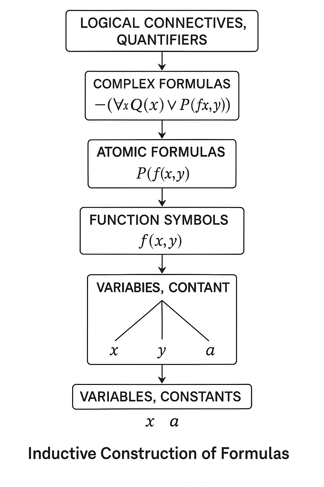
圖 3-10: a tree diagram showing the inductive construction of formulas: starting from variables and constants, building terms with function symbols, then atomic formulas with predicate symbols, and then complex formulas with logical connectives and quantifiers
Prompt: a tree diagram showing the inductive construction of formulas: starting from variables and constants, building terms with function symbols, then atomic formulas with predicate symbols, and then complex formulas with logical connectives and quantifiers
3.1.2 結構與詮釋：語意的設定
定義 3.2（結構） 一個 \( \mathcal{L} \)-結構 \( \mathcal{M} \) 包含：
- 一個非空集合 \( M \)（稱為 domain 或 universe）。
- 對每個 \(n\) 元函數符號 \( f \)，指定一個實際的函數
\[
f^{\mathcal{M}} : M^n \to M.
\]
- 對每個 \(n\) 元謂詞符號 \( P \)，指定一個關係
\[
P^{\mathcal{M}} \subseteq M^n.
\]
- 對每個常元符號 \( c \)，指定一個元素 \( c^{\mathcal{M}} \in M \)。
一旦有了結構，我們才談得上「公式的真值」。這需要有「變數指派」（assignment）。
定義 3.3（變數指派與項的值）
- 變數指派 \( s \) 是從變數集合到 \( M \) 的函數：\( s : \{x_0,x_1,\dots\} \to M \)。
- 對於項 \( t \) ，在結構 \( \mathcal{M} \) 與指派 \( s \) 下，其值（解釋） \( t^{\mathcal{M},s} \) 歸納定義為：
- 若 \(t\) 是變數 \(x_i\)，則 \( t^{\mathcal{M},s} = s(x_i) \)。
- 若 \(t\) 是常元 \(c\)，則 \( t^{\mathcal{M},s} = c^{\mathcal{M}} \)。
- 若 \(t = f(t_1,\dots,t_n)\)，則
\[
t^{\mathcal{M},s} = f^{\mathcal{M}}(t_1^{\mathcal{M},s},\dots,t_n^{\mathcal{M},s}).
\]
定義 3.4（真值） 對公式 \(\varphi\)、結構 \( \mathcal{M} \) 與指派 \( s \)，定義「\(\mathcal{M},s \models \varphi\)」歸納如下：
- 若 \(\varphi\) 是原子公式 \(P(t_1,\dots,t_n)\)，則
\[
\mathcal{M},s \models P(t_1,\dots,t_n) \iff (t_1^{\mathcal{M},s},\dots,t_n^{\mathcal{M},s}) \in P^{\mathcal{M}}.
\]
- 若 \(\varphi\) 是 \(t_1 = t_2\)，則
\[
\mathcal{M},s \models t_1 = t_2 \iff t_1^{\mathcal{M},s} = t_2^{\mathcal{M},s}.
\]
- 布林連接詞依照真值表定義，例如：
\[
\mathcal{M},s \models \lnot\psi \iff \text{不成立 } \mathcal{M},s \models \psi,
\]
\[
\mathcal{M},s \models \psi \land \theta \iff (\mathcal{M},s \models \psi \text{ 且 } \mathcal{M},s \models \theta).
\]
- 量詞：
\[
\mathcal{M},s \models \forall x \, \psi \iff \forall a \in M,\; \mathcal{M},s[x \mapsto a] \models \psi,
\]
\[
\mathcal{M},s \models \exists x \, \psi \iff \exists a \in M,\; \mathcal{M},s[x \mapsto a] \models \psi.
\]
其中 \( s[x \mapsto a] \) 表示與 \(s\) 相同，只是把變數 \(x\) 的值改為 \(a\)。
語意有效性（semantic validity）：一個句子（無自由變數的公式）\(\varphi\) 若對所有結構（或對所有同一語言的結構）皆真，則稱為語意有效，記作：
\[
\models \varphi.
\]
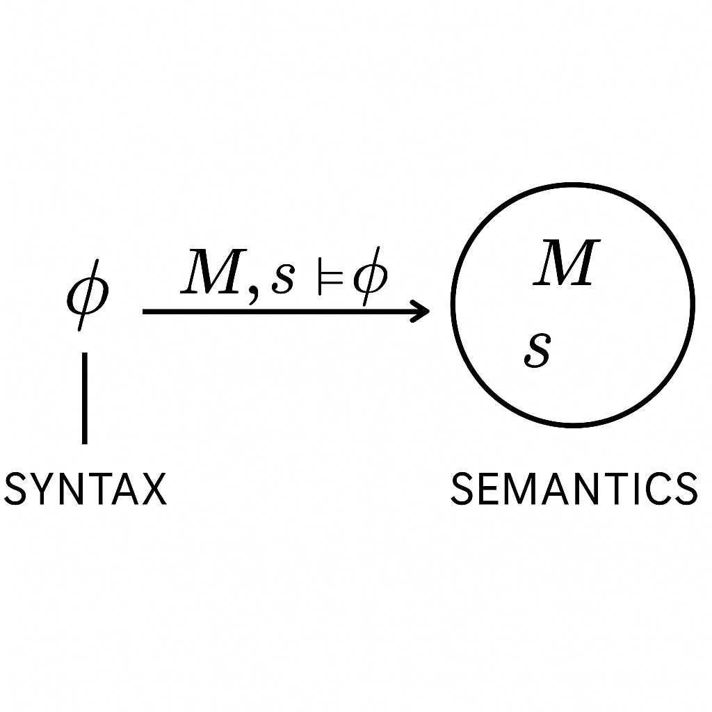
圖 3-12: a diagram showing a formula phi being evaluated in a structure M with an assignment s, highlighting the path from syntax (phi) to semantics (M,s) with the satisfaction relation M,s |= phi
Prompt: a diagram showing a formula phi being evaluated in a structure M with an assignment s, highlighting the path from syntax (phi) to semantics (M,s) with the satisfaction relation M,s |= phi
3.2 塔斯基「真理不可定義定理」的嚴格陳述
3.2.1 語意真理與語法定義：二階視角
塔斯基的基本洞見：「真理」是一個語意概念，但我們自然會想用語法結構來定義它。 他顯示，對於足夠強的一階理論（例如算術），不可能在該理論的語言中定義自身句子的真理謂詞。
直觀說法：
- 考慮一個理論，例如皮亞諾算術 \( \mathrm{PA} \)。其語言 \( \mathcal{L}_{\mathrm{PA}} \) 僅有 \(0, S, +, \times, =\)。
- 我們試圖在同一語言中定義一個新謂詞 \( \mathrm{True}(x) \)，讓 \( \mathrm{True}(\ulcorner \varphi \urcorner) \) 正好刻畫「公式 \(\varphi\) 在標準自然數結構 \( \mathbb{N} \) 中為真」。
- 塔斯基定理說：這樣的 \( \mathrm{True}(x) \) 在該語言中不可定義。
更正式一點，需要先說明「可定義」的概念。
定義 3.5（在結構中定義集合） 設 \( \mathcal{M} = \langle M, \dots \rangle \) 是一個 \( \mathcal{L} \)-結構，\( A \subseteq M^k \)。我們稱 \( A \) 在 \(\mathcal{M}\) 中可定義（definable），若存在一個 \( \mathcal{L} \)-公式 \( \varphi(x_1,\dots,x_k) \) 使得：
\[
A = \{ (a_1,\dots,a_k) \in M^k : \mathcal{M} \models \varphi[a_1,\dots,a_k] \}.
\]
若 \(k=1\)，則稱「集合 \(A\) 在 \(\mathcal{M}\) 中一階可定義」。
目標：討論「真理集合」
\[
\mathrm{Th}(\mathcal{M}) = \{ \ulcorner \varphi \urcorner : \mathcal{M} \models \varphi \}
\]
在某個合理的編碼下，是否在某個算術結構（通常是 \( \mathbb{N} \)）中可定義。
3.2.2 形式陳述（算術版）
為了簡化並聚焦，我們討論最典型版本：在標準自然數結構 \( \mathbb{N} \) 中，真理集合不可定義。
定理 3.6（塔斯基真理不可定義定理；算術版本）
設 \( \mathcal{L}_{\mathrm{PA}} = \{0, S, +, \times, =\} \)，令 \( \mathbb{N} \) 為該語言下的標準自然數結構：
\[
\mathbb{N} = \langle \mathbb{N}, 0, S, +, \times, = \rangle.
\]
設 \( \mathrm{Sent}_{\mathcal{L}_{\mathrm{PA}}} \subseteq \mathbb{N} \) 為所有 \( \mathcal{L}_{\mathrm{PA}} \)-句子的戈德爾編碼集合，並定義真理集合：
\[
\mathrm{True}_{\mathbb{N}} = \{ n \in \mathbb{N} : n = \ulcorner \varphi \urcorner \text{ 且 } \mathbb{N} \models \varphi \}.
\]
則不存在任何 \( \mathcal{L}_{\mathrm{PA}} \)-公式 \( \mathrm{Tr}(x) \) 滿足：
\[
\forall n \in \mathbb{N},\;
\mathbb{N} \models \mathrm{Tr}(\overline{n})
\iff
n \in \mathrm{True}_{\mathbb{N}}.
\]
亦即 \(\mathrm{True}_{\mathbb{N}}\) 在 \( \mathbb{N} \) 中不可一階定義。
這就是：「算術真理不可在算術中定義」的精確表述。
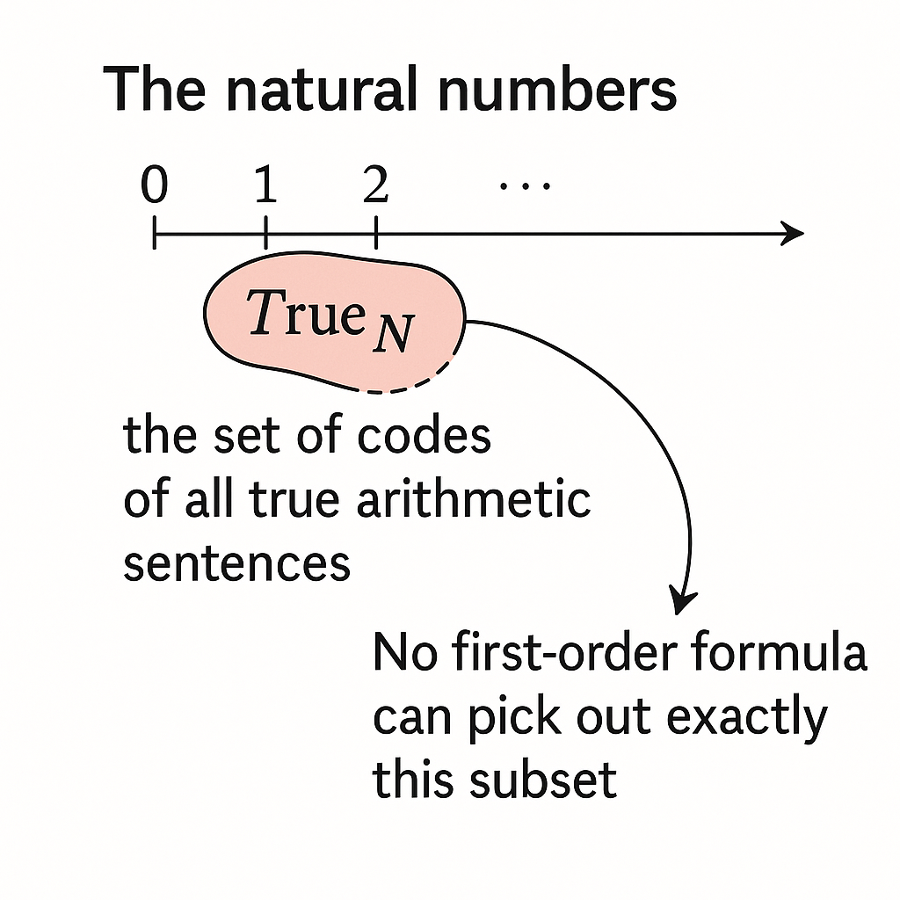
圖 3-8: a picture of the natural numbers as a line, with a highlighted complicated subset representing True_N, labeled "the set of codes of all true arithmetic sentences", and an arrow indicating that no first-order formula can pick out exactly this subset
Prompt: a picture of the natural numbers as a line, with a highlighted complicated subset representing True_N, labeled "the set of codes of all true arithmetic sentences", and an arrow indicating that no first-order formula can pick out exactly this subset
3.3 塔斯基定理的證明：從對角化到語意自指
3.3.1 證明策略概觀
證明策略的結構與哥德爾不完備性定理十分相似，核心工具仍是對角化（diagonalization）與自指。主線可以概略為：
- 假設存在「真理謂詞」\(\mathrm{Tr}(x)\) 在 \( \mathbb{N} \) 中可定義。
- 利用對角引理構造一個句子 \(\gamma\)，其含義是：
\[
\gamma \leftrightarrow \lnot \mathrm{Tr}(\ulcorner \gamma \urcorner).
\]
- 分析：若 \(\gamma\) 在 \( \mathbb{N} \) 中為真，則
\(\mathrm{Tr}(\ulcorner \gamma \urcorner)\) 應該為真，導致\(\gamma\)同時真且假；反之亦然。
- 得到矛盾，因此最初假設「存在可定義的真理謂詞」錯誤。
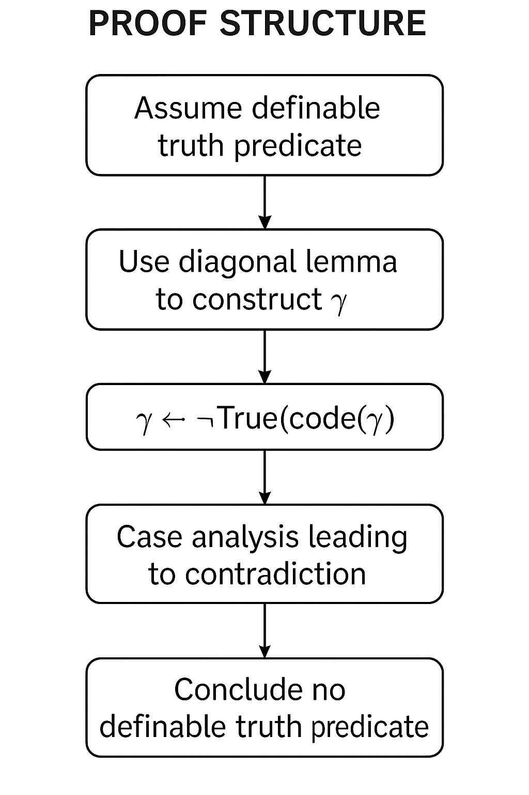
use diagonal lemma to construct gamma -> derive gamma <-> not True(code(gamma)) -> case analysis leading to contradiction -> conclude no definable truth predicate">
圖 3-5: a flowchart showing the proof structure: assume definable truth predicate -> use diagonal lemma to construct gamma -> derive gamma <-> not True(code(gamma)) -> case analysis leading to contradiction -> conclude no definable truth predicate
Prompt: a flowchart showing the proof structure: assume definable truth predicate -> use diagonal lemma to construct gamma -> derive gamma <-> not True(code(gamma)) -> case analysis leading to contradiction -> conclude no definable truth predicate
3.3.2 對角引理（Diagonal Lemma）
引理 3.7（對角引理）
令 \( \varphi(x) \) 為任意一個一變數公式（在語言 \( \mathcal{L}_{\mathrm{PA}} \) 中）。則存在一個句子 \(\psi\) 使得：
\[
\mathrm{PA} \vdash \psi \leftrightarrow \varphi(\ulcorner \psi \urcorner).
\]
換言之，對於任何性質 \(\varphi(x)\)，存在一個句子 \(\psi\)「談論自己」：它斷言「\(\varphi\) 對我這句話的編碼成立」。
直覺解釋：
- 戈德爾編碼使得「公式本身」可以當成自然數來談。
- 因此，「把這個公式的戈德爾碼塞進某個參數」成為一個數學操作。
- 對角引理實現了「令 \(\psi\) 是這樣一個公式：\(\psi\) 等價於 \(\varphi\) 套用在 自己的編碼 上」的構造。
證明（略要技術步驟）：
- 構造一個二變數公式 \( \theta(x,y) \) 使得
\[
\theta(x,y) \text{ 表示： } y \text{ 是公式 } \varphi \text{ 在參數 } x \text{ 下的「替換結果」的編碼。}
\]
嚴格而言，利用「替換」的可遞歸描述即可在算術中定義。
- 定義一變數公式
\[
\beta(x) := \exists y \big( \theta(x,y) \land \varphi(y) \big).
\]
直覺上：\(\beta(x)\) 表現「對某個公式，其自身的編碼被塞為參數後得到的結果滿足 \(\varphi\)」。
- 令 \(\psi\) 為 \(\beta(\ulcorner \beta(x) \urcorner)\) 所得到的句子。即
\[
\psi := \beta(\overline{\ulcorner \beta(x) \urcorner}).
\]
- 由構造可證明：
\[
\mathrm{PA} \vdash \psi \leftrightarrow \varphi(\ulcorner \psi \urcorner).
\]
技術細節在於戈德爾式地算術化「替換」操作以及「\(\ulcorner \,\cdot\, \urcorner\)」編碼，但對角引理在邏輯文獻中是標準工具。
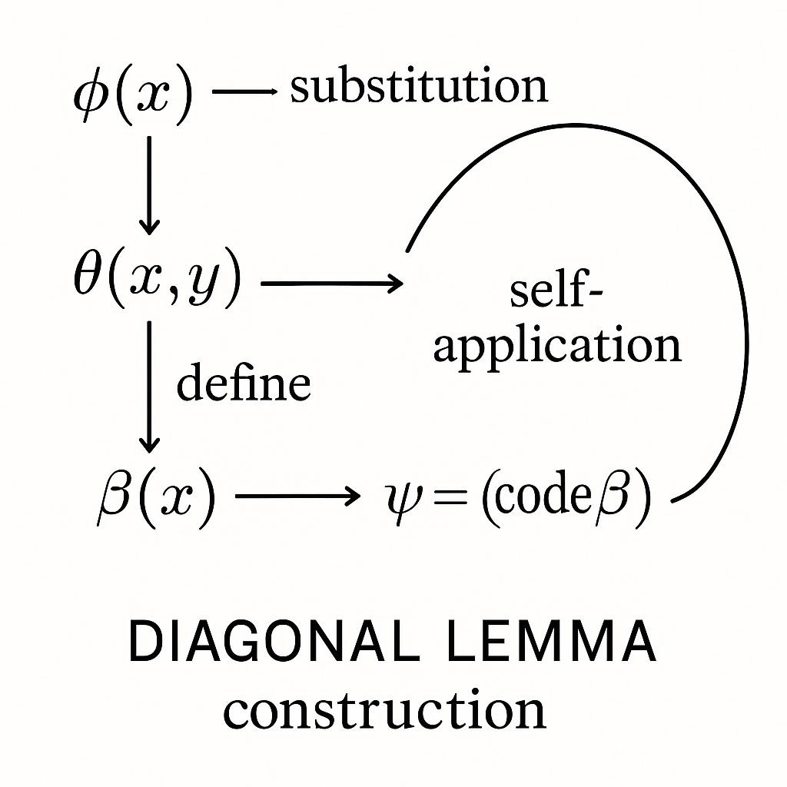
圖 3-1: a schematic diagram of the diagonal lemma construction: starting with a formula phi(x), building a two-variable formula theta(x,y) representing substitution, then defining beta(x) and finally psi = beta(code(beta)), with a loop indicating self-application
Prompt: a schematic diagram of the diagonal lemma construction: starting with a formula phi(x), building a two-variable formula theta(x,y) representing substitution, then defining beta(x) and finally psi = beta(code(beta)), with a loop indicating self-application
3.3.3 利用對角引理構造「李爾式」句子
我們現在施用對角引理到特定公式 \(\varphi(x)\) 上。設想我們已經在算術中定義了真理謂詞 \(\mathrm{Tr}(x)\)，也就是假設存在某個公式 \(\mathrm{Tr}(x)\) 滿足：
\[
\forall n\; \big( \mathbb{N} \models \mathrm{Tr}(\overline{n})
\iff n \in \mathrm{True}_{\mathbb{N}} \big).
\]
考慮公式：
\[
\varphi(x) := \lnot \mathrm{Tr}(x).
\]
根據對角引理，存在一個句子 \(\gamma\) 使得：
\[
\mathrm{PA} \vdash \gamma \leftrightarrow \lnot \mathrm{Tr}(\ulcorner \gamma \urcorner).
\]
同時，由於 \( \mathbb{N} \) 是 \(\mathrm{PA}\) 的標準模型，且 \(\mathrm{PA}\) 是可演繹可靠，於是：
\[
\mathbb{N} \models \gamma \leftrightarrow \lnot \mathrm{Tr}(\ulcorner \gamma \urcorner).
\]
此時，我們擁有一個「李爾悖論式」的句子：\(\gamma\) 說「我的編碼所對應的句子不真」。
3.3.4 矛盾的推導
我們在標準結構 \( \mathbb{N} \) 中分析 \(\gamma\) 的真值：
- 假設 \( \mathbb{N} \models \gamma \)（\(\gamma\) 為真）。由
\[
\mathbb{N} \models \gamma \leftrightarrow \lnot \mathrm{Tr}(\ulcorner \gamma \urcorner),
\]
可得
\[
\mathbb{N} \models \lnot \mathrm{Tr}(\ulcorner \gamma \urcorner).
\]
也就是
\[
\mathbb{N} \not\models \mathrm{Tr}(\ulcorner \gamma \urcorner).
\]
但由假設 \(\mathrm{Tr}(x)\) 的性質，若 \(\gamma\) 在 \( \mathbb{N} \) 中為真，必有
\[
\mathbb{N} \models \mathrm{Tr}(\ulcorner \gamma \urcorner),
\]
矛盾。
- 假設 \( \mathbb{N} \not\models \gamma \)（\(\gamma\) 為假）。則
\[
\mathbb{N} \models \lnot \gamma.
\]
再由
\[
\mathbb{N} \models \gamma \leftrightarrow \lnot \mathrm{Tr}(\ulcorner \gamma \urcorner),
\]
可得
\[
\mathbb{N} \models \lnot \gamma \leftrightarrow \mathrm{Tr}(\ulcorner \gamma \urcorner).
\]
因此
\[
\mathbb{N} \models \mathrm{Tr}(\ulcorner \gamma \urcorner).
\]
按照真理謂詞假設，這表示 \(\gamma\) 在 \( \mathbb{N} \) 中為真，於是
\[
\mathbb{N} \models \gamma,
\]
再度矛盾。
兩種情況都導向矛盾，因此假設「在 \( \mathbb{N} \) 中存在可定義的真理謂詞」必然錯誤。塔斯基真理不可定義定理得證。
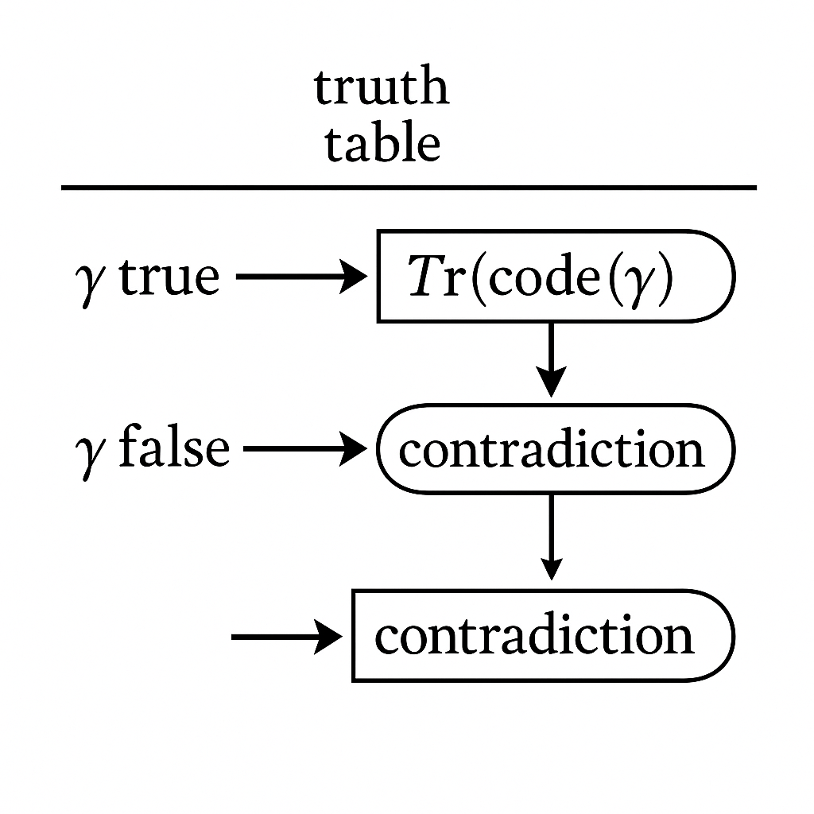
圖 3-6: a truth table-like diagram for the sentence gamma and predicate Tr(code(gamma)), showing the two cases (gamma true or gamma false) both leading to contradictions, visually emphasizing the paradoxical nature of the self-referential construction
Prompt: a truth table-like diagram for the sentence gamma and predicate Tr(code(gamma)), showing the two cases (gamma true or gamma false) both leading to contradictions, visually emphasizing the paradoxical nature of the self-referential construction
3.3.5 自指的角色：與哥德爾定理的比較
從技術上看，塔斯基定理與哥德爾第一不完備性定理極為相似：
- 兩者都使用戈德爾編碼將語句「數學化」。
- 兩者都利用對角引理構造一個「關於自己」的句子。
- 哥德爾句子 \( G \) 表示「我不可被此理論證明」；塔斯基句子 \( \gamma \) 表示「我不真」或「我的真值否定了真理謂詞的定義」。
但兩者聚焦的層次不同：
- 哥德爾定理是關於可證明性（provability）：語法層次
- 塔斯基定理是關於真理（truth）：語意層次
然而，自指機制——透過對角化——在兩者中是共同核心。因此，自指邏輯的研究，常同時考慮哥德爾與塔斯基的結果。
3.4 塔斯基不可判定定理的語意版本
3.4.1 語意後果與語意有效性
在模型論中，語意後果與語意有效性扮演關鍵角色。
定義 3.8（語意後果）
給定一集合句子 \( \Gamma \) 與句子 \(\varphi\)，我們說 \(\varphi\) 是 \(\Gamma\) 的語意後果（semantic consequence），記作
\[
\Gamma \models \varphi,
\]
若對所有 \( \mathcal{L} \)-結構 \( \mathcal{M} \)，滿足：
\[
\text{若 } \mathcal{M} \models \Gamma \text{（即對所有 } \psi \in \Gamma,\, \mathcal{M} \models \psi )\,,
\text{ 則 } \mathcal{M} \models \varphi.
\]
若 \(\Gamma = \emptyset\)，則 \(\models \varphi\) 表示「\(\varphi\) 在所有結構中皆真」，稱為語意有效。
顯然，「檢查語意有效性」就是問：「\(\varphi\) 是否在所有結構中為真？」這非常接近於「檢查真理性」的概念，只是對所有結構，而非單一結構；兩者在可判定性上有密切關聯。
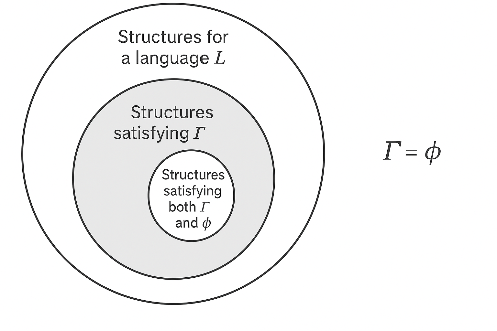
圖 3-3: a Venn-like diagram of all structures for a language L, with shaded region of structures satisfying Gamma, and a nested region of structures satisfying both Gamma and phi, illustrating Gamma |= phi
Prompt: a Venn-like diagram of all structures for a language L, with shaded region of structures satisfying Gamma, and a nested region of structures satisfying both Gamma and phi, illustrating Gamma |= phi
3.4.2 一階邏輯的可判定性與不可判定性
一階邏輯有一個強而有力的結果：完全性定理（Gödel Completeness Theorem）：
\[
\Gamma \models \varphi \iff \Gamma \vdash \varphi,
\]
其中「\(\Gamma \vdash \varphi\)」是語法可證明性。
然而，這並不意味著「存在一個演算法可以判定任意一階公式是否語意有效」。事實上，一階語意有效性是不可判定的，這可視為某種「塔斯基不可判定定理」。
定理 3.9（一階邏輯語意有效性不可判定）
集合
\[
\mathrm{Val} = \{ \ulcorner \varphi \urcorner : \models \varphi \}
\]
（所有語意有效的一階句子的戈德爾碼）是不可遞歸（undecidable）的；換言之，不存在演算法可以對每個一階句子決定其是否語意有效。
證明思路（與圖靈機、停機問題或遞歸理論等同構）：
- 由哥德爾不完備性定理知，任何遞歸可枚舉且一致的理論 \(T\)（包含足夠算術）都是不完備的。
- 若 \(\mathrm{Val}\) 可判定，則我們可以透過以下方法構造一個完全且遞歸可枚舉的理論，與哥德爾結果矛盾：
- 對每個句子 \(\varphi\)，若演算法判定 \(\models \varphi\)，就把 \(\varphi\) 放入理論；否則把 \(\lnot \varphi\) 放入理論。
- 依據完全性，該理論將是語意完備且一致。
- 因此，\(\mathrm{Val}\) 不可判定。
這個不可判定性與塔斯基真理不可定義定理息息相關：若我們在算術中能定義真理集合（對應於一個語意判定器），那麼就可藉由該定義構造演算法判定一階語意有效性；但這被上述定理排除。
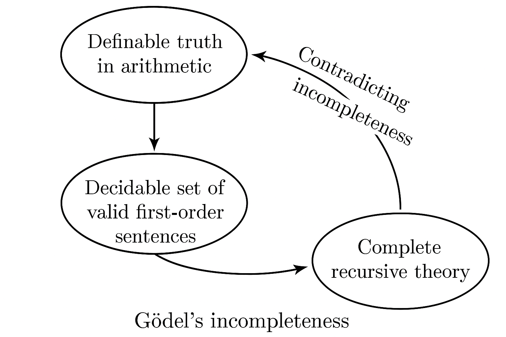
圖 3-13: a conceptual diagram connecting three nodes: "Definable truth in arithmetic", "Decidable set of valid first-order sentences", and "Complete recursive theory"; arrows show that definable truth would give decidable validity, which would yield a complete recursive theory, contradicting Gödel's incompleteness
Prompt: a conceptual diagram connecting three nodes: "Definable truth in arithmetic", "Decidable set of valid first-order sentences", and "Complete recursive theory"; arrows show that definable truth would give decidable validity, which would yield a complete recursive theory, contradicting Gödel's incompleteness
3.4.3 塔斯基語意觀點下的不可判定性
塔斯基本人在發展語意概念（真理、語意後果）時，強調以下幾點：
- 真理是一個「外在的」語意概念：對象語言的真理需在詮釋語言（meta-language）中定義。
- 若嘗試在對象語言中內部化真理，則會遇到李爾悖論式的自指，導致不可定義。
- 同樣地，若妄想「完全機械地」判定一切語意有效性，也會與自指與不完備性產生衝突，導致不可判定性。
這些觀點綜合起來，構成「塔斯基式語意觀」：語意概念必須在一個足夠強且嚴格區分層次的後設語言中處理，而不能天真地「內化」。
3.5 自指、真理分層與語言的階層化
3.5.1 塔斯基的語言階層（Tarski hierarchy）
為了解決李爾悖論等自指問題，塔斯基提出一個著名策略：語言階層化。
- 對象語言 \( L_0 \)：僅談論某些基本對象（如數、集合等），不包含自身的真理謂詞。
- 第一層後設語言 \( L_1 \)：包含對象語言的語句，並有真理謂詞 \( \mathrm{True}_0(x) \)，談論「在 \(L_0\) 中為真的句子」。
- 第二層後設語言 \( L_2 \)：包含 \(L_1\) 的語句與真理謂詞 \( \mathrm{True}_1(x) \)，談「在 \(L_1\) 中為真的句子」。
- 如此無限上升形成塔斯基階層。
這樣可以避免「在同一語言中自指自己的真理」而產生悖論。但代價是，沒有單一語言可以完整囊括「所有語言的真理」。
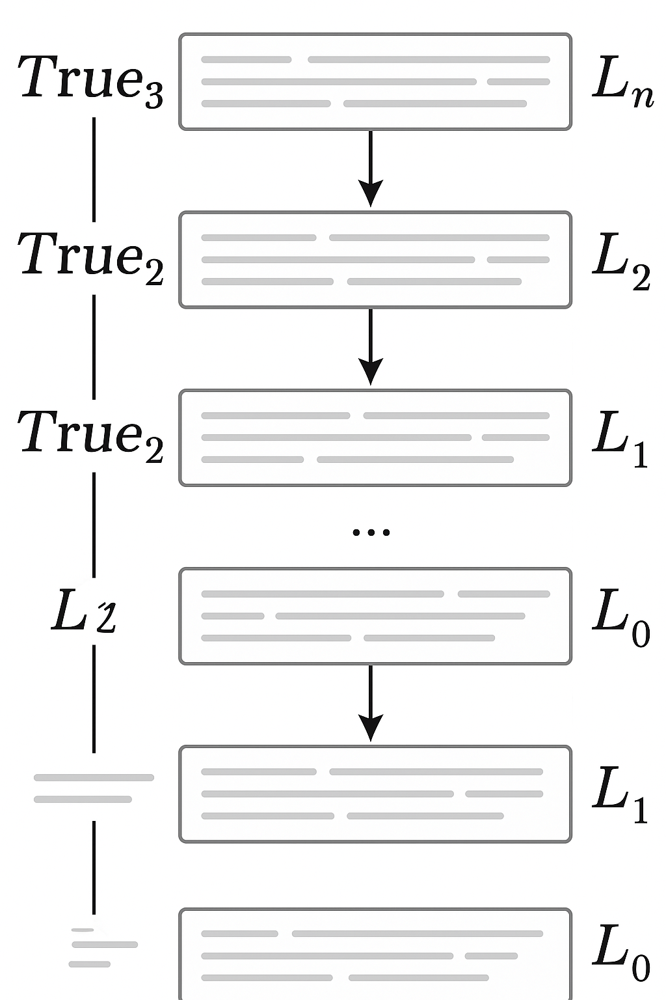
圖 3-7: a vertical hierarchy diagram with layers labeled L0, L1, L2, ..., each layer having its own truth predicate True_n talking about sentences of the layer below, with no arrows looping back within the same layer
Prompt: a vertical hierarchy diagram with layers labeled L0, L1, L2, ..., each layer having its own truth predicate True_n talking about sentences of the layer below, with no arrows looping back within the same layer
3.5.2 自指的再定位：為何仍然「存在」
即使我們引入語言階層，形式系統中仍然會出現某種「跨層次」的自指與不完備現象：
- 對象語言 \( L_0 \) 的句子可以被 \( L_1 \) 中的真理謂詞完整描述。
- 但 \( L_1 \) 的真理無法由 \( L_1 \) 本身定義，只能由 \( L_2 \) 描述。
- 因此，自指與不完備「被推遲到更高層」，而非徹底消失。
於是，在邏輯與數學基礎研究中，人們逐漸接受一種觀點：
沒有單一、封閉、完全自足的形式語言能內部掌握其自身真理；
真理必然在某種意義上「超越」了任一給定的形式系統。
3.6 與現代發展的連結：可定義性、內部模型與真理謂詞
3.6.1 可定義性階層與算術真理
塔斯基定理說：算術真理不可一階定義。但在集合論與可定義性理論中，人們進一步研究：
- 算術真理集合 \( \mathrm{True}_{\mathbb{N}} \) 的遞歸理論地位：它是 \(\Pi^1_1\)-完全集合。
- 透過階層化邏輯（如二階算術、解析階層），可逐步「逼近」真理集合。例如：
\[
\Sigma^0_n\text{-真理}、\Pi^0_n\text{-真理}
\]
分別可由對應的遞歸算子定義。
- 然而「整體的算術真理」仍然逃脫任何有限階段的描述。
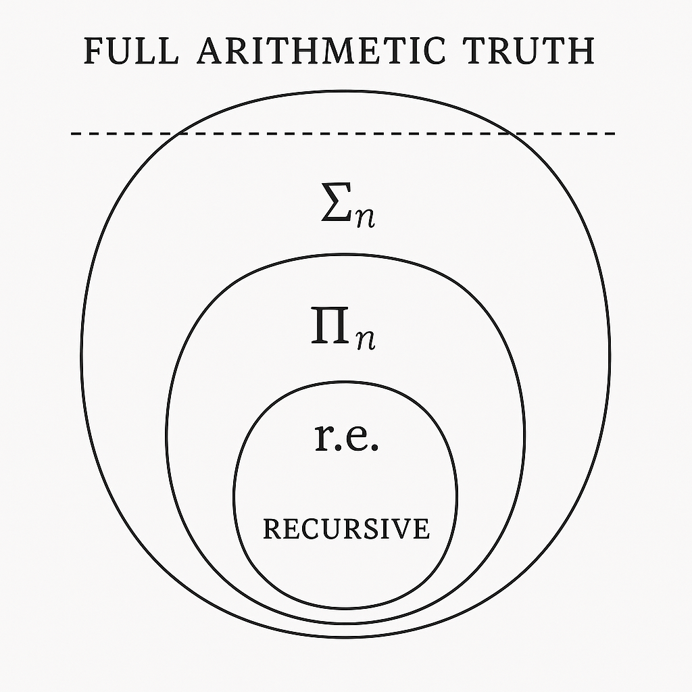
圖 3-11: a vertical hierarchy of complexity classes: recursive, r.e., Σ^0_n, Π^0_n, ..., with a top region labeled "full arithmetic truth" above all finite levels, indicating that it's beyond any finite definability level
Prompt: a vertical hierarchy of complexity classes: recursive, r.e., Σ^0_n, Π^0_n, ..., with a top region labeled "full arithmetic truth" above all finite levels, indicating that it's beyond any finite definability level
3.6.2 集合論中的真理謂詞與內部模型
在 ZFC 集合論中，我們也可以問類似問題：是否能在 \( V \)（整個集合宇宙）中定義「集合論真理」？
答案與算術情況類似：不行——這可由將自然數嵌入集合論宇宙並利用塔斯基定理推出。於是，在集合論中，人們常考慮：
- 在某個內部模型（如 \(L\)、\(HOD\)）中定義真理謂詞。
- 這些內部模型的真理可以相對地被外部世界（上層的後設語言）描述。
- 但整個 \(V\) 的真理謂詞仍然只能在更高的後設層面上處理。
這導致一個非常深刻的哲學與技術問題：集合論真理是「客觀」的嗎？或只是相對於某個模型？ 塔斯基定理提供了形式上的約束：不論怎麼回答，真理都不能完全壓縮在單一一階定義之中。
3.6.3 內部真理謂詞的「局部」版本
儘管整體真理不可定義，我們仍可以考慮「局部化」的真理謂詞，例如：
- 對於語言中某一有限深度的片段，或僅限於某一類型的公式（如 \(\Delta_0\)-公式），定義真理謂詞。
- 例如在算術中，\(\Delta_0\)-真理（界限量詞公式的真理）是可遞歸的，因此可在算術中定義一個「\(\Delta_0\)-真理謂詞」。
這種做法可以被視為「分層的真理」——與塔斯基的語言階層觀念互補：不是在語言層次上區分，而是在「公式複雜度」上分層。
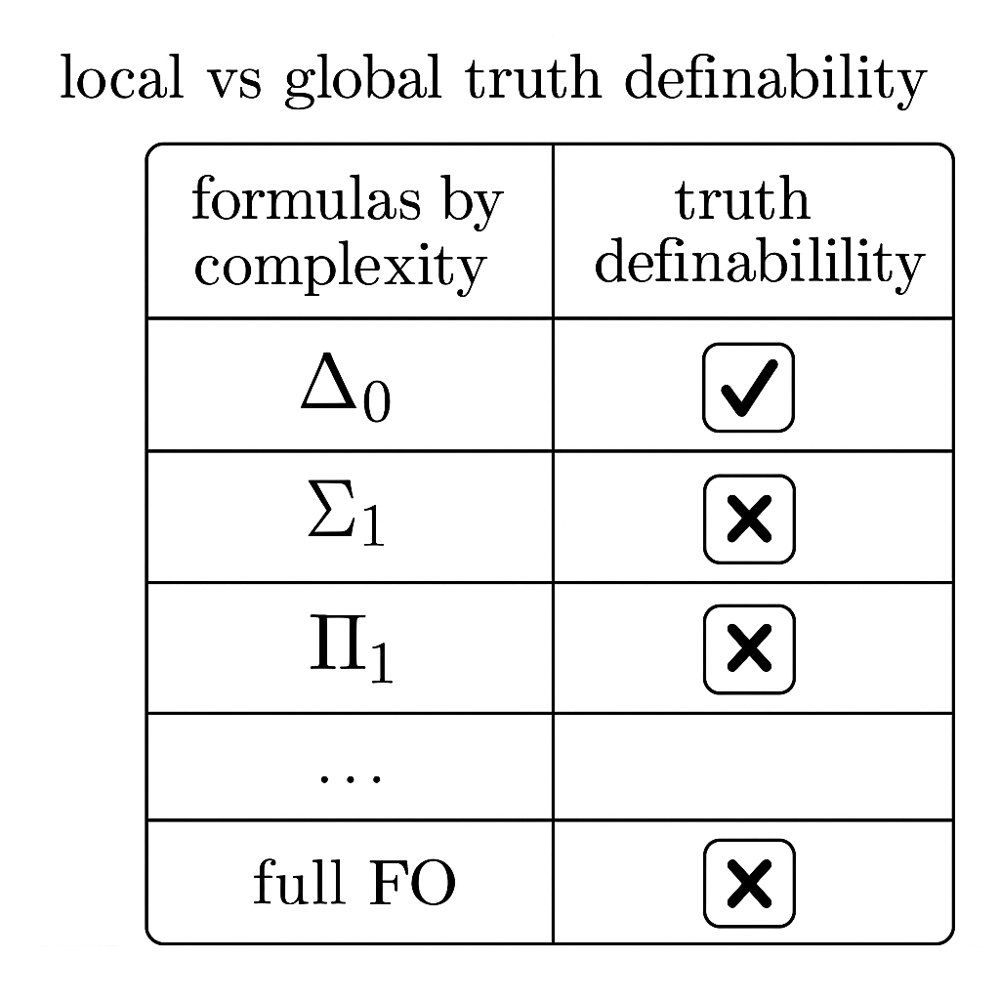
圖 3-4: a chart with formulas grouped by complexity (Δ0, Σ1, Π1, ..., full FO), showing checkmarks where truth is definable/decidable (Δ0) and crosses where it's not (full FO), labeled "local vs global truth definability"
Prompt: a chart with formulas grouped by complexity (Δ0, Σ1, Π1, ..., full FO), showing checkmarks where truth is definable/decidable (Δ0) and crosses where it's not (full FO), labeled "local vs global truth definability"
3.7 小結與展望：塔斯基定理在自指邏輯中的位置
3.7.1 核心結論整理
- 塔斯基真理不可定義定理：在標準算術結構 \( \mathbb{N} \) 中，無法用一階公式定義「所有真算術句子的集合」。
- 其證明核心是對角引理與自指：構造一個句子 \(\gamma\)，使其斷言「我不真」。
- 語意有效性不可判定：一階語言中，不存在演算法可判定任意句子是否在所有結構中為真。
- 兩個結果均反映：語意概念（真理、有效性）無法被完全「內化」成單純的語法或可計算程序。
3.7.2 與自指邏輯系列課程的關聯
在本系列前後幾講中，我們已看到或將看到：
- 哥德爾不完備性定理：以可證明性為核心的語法自指。
- 塔斯基真理不可定義定理：以真理為核心的語意自指。
- 圖靈不可計算性、停機問題：以計算程序為核心的演算法自指。
- 馮紐曼自複製機：以物理機制與資訊結構為核心的工程自指。
這些結果共同勾勒出一幅統一圖像：
一旦一個系統足夠表達自身結構與推理規則，便無可避免地面對
某種形式的自指與不完備／不可定義／不可判定現象。
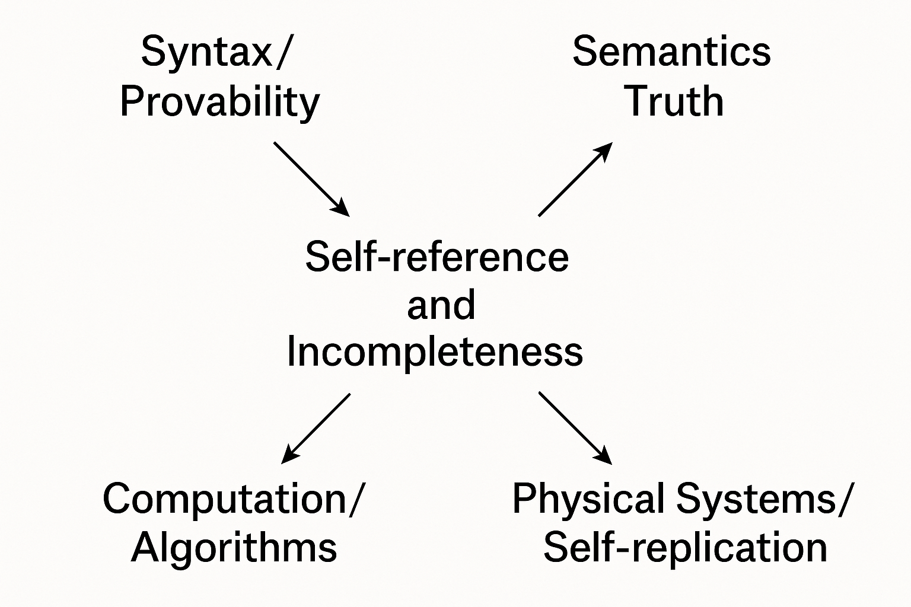
圖 3-2: a unified diagram with four quadrants labeled "Syntax/Provability", "Semantics/Truth", "Computation/Algorithms", "Physical Systems/Self-replication", with arrows connecting them and a central label "Self-reference and Incompleteness"
Prompt: a unified diagram with four quadrants labeled "Syntax/Provability", "Semantics/Truth", "Computation/Algorithms", "Physical Systems/Self-replication", with arrows connecting them and a central label "Self-reference and Incompleteness"
3.7.3 後續研究方向建議
對博士生與研究者而言，若希望進一步在「自指邏輯」方向展開研究，可考慮以下主題：
- 可定義性理論與解析階層：研究語言中各種階層的可定義集合與真理集合的複雜度。
- 集合論真理與內部模型：探討 \(V\) 的真理與 \(L\)、\(HOD\)、強大基數假設等之間的關係。
- 真理理論（truth theories）：如 Kripke 的固定點真理理論、Feferman–Smith 的可容許真理系統等，研究如何在保留某種自指能力的同時避免悖論。
- 自指與程式驗證：例如 Hoare 邏輯、程式邏輯中如何處理「程式談論自己的性質」（反射式程式）所引發的邏輯問題。
在後續講次中，我們將繼續把這些邏輯層次的自指現象，與計算理論、物理系統（如馮紐曼自複製機）與當代量子資訊中的自指結構連結起來，形成一個跨學科的自指理論框架。